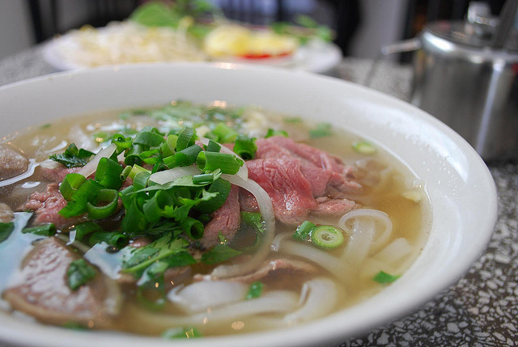

October 19, 2019
Pho is a classic Vietnamese noodle soup bowl. This recipe is for a chicken broth rather than the beef broth you will typically have at a restaurant. My mom used to always make the beef broth, but ever since my Uncle from France visited Seattle and shared his chicken broth recipe, my mom has only made this broth ever since. I do like the chicken broth better because it is more light and usually less salty than the beef. The ingredients list may look intimidating, but pho includes a variety of toppings and condiments. We typically use all of it from bean sprouts to garlic chili oil, but it is up to you! One note to add about this recipe is that the longer the pho broth is boiled, the better the taste and flavor. Enjoy!